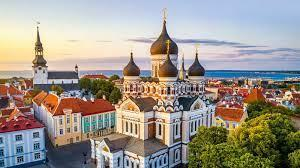
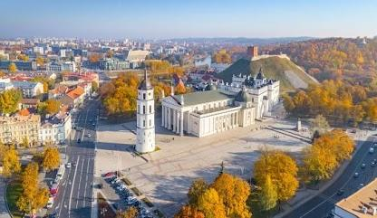
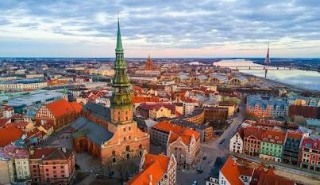
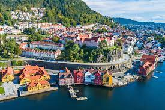
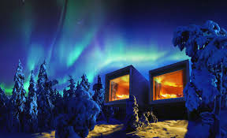
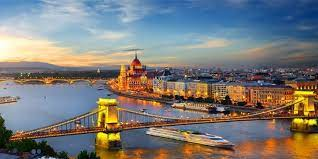
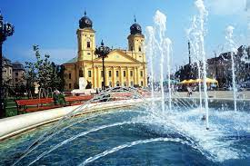
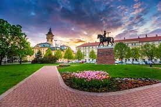

Le nostre offerte
Viaggio nel Baltico
500€ / persona
Toccare per i dettagli
Viaggio in Ungheria
400€ / persona
Toccare per i dettagli

Scoprite Tallinn con stile grazie al nostro pacchetto: volo di andata e ritorno, 2 notti nel lussuoso Palace Hotel a 4 stelle e trasferimenti aeroportuali senza problemi per un'esperienza di viaggio senza interruzioni.
200€ / persona

Esplorate Vilnius con il nostro pacchetto: volo di andata e ritorno, 2 notti nell'elegante Hilton Garden Inn a 4 stelle e trasferimenti aeroportuali senza problemi per un'esperienza di viaggio senza stress.
150€ / persona

Scoprite Riga con il nostro pacchetto: volo di andata e ritorno, 2 notti al Wellton Riverside Spa Hotel a 4 stelle e trasferimento in aeroporto.
180€ / persona

Godetevi una deliziosa fuga a Parnü con il nostro pacchetto che prevede un volo di andata e ritorno, un soggiorno di 2 notti presso il lussuoso Estonia Resort a 4 stelle e comodi trasferimenti aeroportuali.
220€ / persona

Godetevi il fascino di Tartu con il nostro pacchetto: volo di andata e ritorno, 2 notti presso l'elegante Hotel Soho a 4 stelle e comodi trasferimenti dall'aeroporto per un'esperienza senza interruzioni.
220€ / persona

Scoprite il fascino di Kaunas con il nostro pacchetto: volo di andata e ritorno, 2 notti nell'elegante Radisson Hotel a 4 stelle e comodi trasferimenti dall'aeroporto per un'esperienza senza interruzioni.
190€ / persona

Scoprite la grandezza di San Pietroburgo con il nostro pacchetto: volo di andata e ritorno, 2 notti presso il prestigioso Pushka Inn Hotel a 4 stelle e trasferimenti aeroportuali senza problemi per un viaggio senza interruzioni.
150€ / persona

Esplorate Oslo con il nostro pacchetto: volo di andata e ritorno, 2 notti all'Amerikalinjen Hotel 4 stelle e trasferimento dall'aeroporto.
150€ / persona

Esplorate l'affascinante Stoccolma con il nostro pacchetto: volo di andata e ritorno, 2 notti presso il raffinato NOFO Hotel a 4 stelle e trasferimenti aeroportuali senza soluzione di continuità per un'esperienza incantevole.
120€ / persona

Immergetevi nella bellezza di Helsinki con il nostro pacchetto: volo di andata e ritorno, 2 notti nell'elegante Hotel F6 a 4 stelle e comodi trasferimenti aeroportuali per un'esperienza senza interruzioni.
120€ / persona

Vivete l'esperienza di Copenaghen con il nostro pacchetto: volo di andata e ritorno, 2 notti all'Andersen Boutique Hotel 4 stelle e trasferimento dall'aeroporto.
100€ / persona

Immergetevi nel fascino di Bergen con il nostro pacchetto: volo di andata e ritorno, 2 notti presso l'elegante Opus XVI Hotel a 4 stelle e comodi trasferimenti dall'aeroporto per un'esperienza senza interruzioni.
165€ / persona

Scoprite Göteborg con stile grazie al nostro pacchetto: volo di andata e ritorno, 2 notti nel prestigioso Radisson Blu Hotel a 4 stelle e comodi trasferimenti dall'aeroporto per un viaggio senza interruzioni.
170€ / persona

Lasciatevi incantare dall'incantevole Lapponia con il nostro pacchetto: volo di andata e ritorno, 2 notti presso il prestigioso Amerikalinjen Hotel a 4 stelle e trasferimento dall'aeroporto al pittoresco Sky Hotel Ounasvaara.
240€ / persona

Scoprite Reykjavik con il nostro pacchetto: volo di andata e ritorno, 2 notti al Brim Hotel a 4 stelle e trasferimento in aeroporto.
185€ / persona

Scoprite Budapest con stile grazie al nostro pacchetto: volo di andata e ritorno, 2 notti nell'elegante Up Hotel a 4 stelle e trasferimenti aeroportuali senza problemi.
100€ / persona

Scoprite il fascino di Pécs con il nostro fantastico pacchetto che offre un volo di andata e ritorno, un soggiorno di 2 notti presso l'accogliente Palatinus Grand Hotel a 3 stelle e trasferimenti aeroportuali senza problemi.
120€ / persona

Esplorate Debrecen con il nostro pacchetto: volo di andata e ritorno, 2 notti al Grand Hotel Aranybika 3 stelle e trasferimento dall'aeroporto.
120€ / persona
